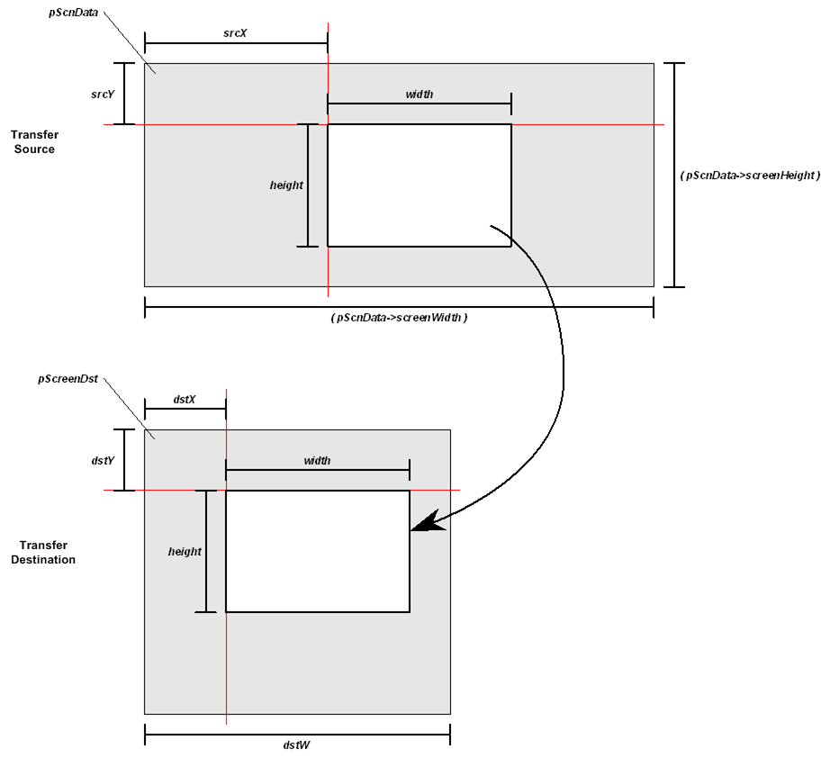
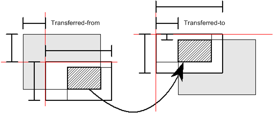

#include <nnsys/g2d/g2d_Screen.h>void NNS_G2dBGLoadScreenRect(
void* pScreenDst,
const NNSG2dScreenData* pScnData,
int srcX,
int srcY,
int dstX,
int dstY,
int dstW,
int dstH,
int width,
int height
);| pScreenDst | [OUT] Pointer to the reference point of the transfer destination . |
| pScnData | [IN] Pointer to screen data that serves as the transfer source. |
| srcX | [IN] The x-coordinate in the upper left corner of the transfer source. (In units of characters) |
| srcY | [IN] The y-coordinate in the upper left corner of the transfer source. (In units of characters) |
| dstX | [IN] The x-coordinate in the upper left corner of the transfer destination. (In units of characters) |
| dstY | [IN] The y-coordinate in the upper left corner of the transfer destination. (In units of characters) |
| dstW | [IN] Width of the transfer destination region. (In units of characters) |
| dstH | [IN] Height of the transfer destination region. (In units of characters) |
| width | [IN] Width of the rectangular region to be transferred. (In units of characters) |
| height | [IN] Height of the rectangular region to be transferred. (In units of characters) |
None.
Copies the screen data specified in the rectangle box to the specified location in the buffer.
Uses (srcX, src Y) of pScnData for the coordinates of the top left corner, and copies a region of width width and height height to the region of the width width and height height at coordinates (dstX, dstY) with pScreenDst as origin.
To fit into the transferred-from or transferred-to region, the to-be-transferred region is clipped. Clipped parts will not be transferred.
As shown in the figure, if the to-be-transferred region sticks out of transferred-from or transferred-to region, only the portion that fits into the latter will be transferred. In the example shown in the figure, only the region indicated by the diagonal lines will be transferred.
2007/01/23 Changed to perform clipping
2006/01/16 Changed arguments
2005/06/16 Initial version
CONFIDENTIAL